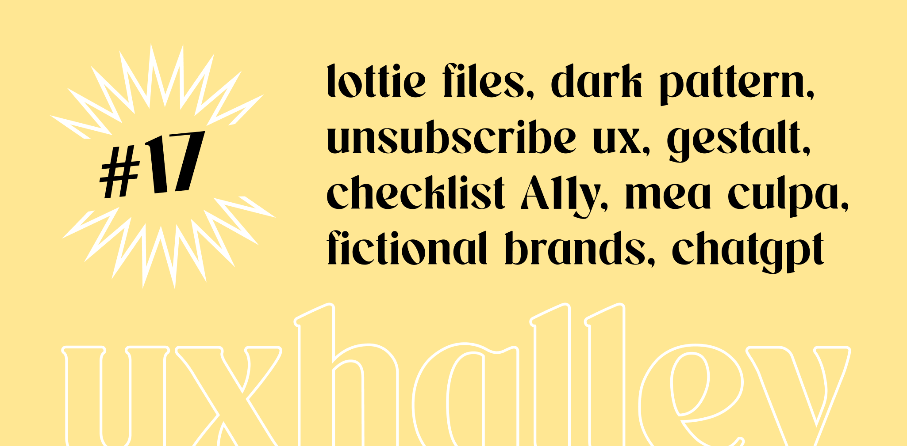

UX Halley, newsletter per designer
uxhalley, edizione diciasette
22 maggio 2023 — UX Halley: una newsletter bisettimanale che raccoglie news e links utili sulla UX. Le regole sono semplici: max 5 minuti di lettura; se ti interessa, lo approfondisci; se ti piace, lo condividi; a prescindere ci vediamo tra due settimane. Facile facile.
Immagine di copertina dell'edizione di UX Halley, newsetter per designer
Link per designer suggerito nell'edizione di UX Halley, newsletter per designer
lottie for figma
Finalmente. Finalmente il plugin per Figma che la gran parte di chi si occupa di #uidesign attendeva. LottieFiles, by Airbnb, è ora anche un plugin per esportare animazioni in modo così semplice che non usarlo sarebbe davvero da folli.
Link per designer suggerito nell'edizione di UX Halley, newsletter per designer
unsubscribe
Hai presente quella sensazione tra rabbia e sconforto che hai quando cerchi di disinscriverti da qualche servizio e non riesci? Sono dei #darkpattern che vengono usati in modo un pò eccessivo. Questo sito web non lo puoi perdere.
Link per designer suggerito nell'edizione di UX Halley, newsletter per designer
gestalt principles
Prossimità, continuità, similarità, gerarchia sono solo alcuni dei principi della #gestalt, o psicologia della forma. Se ti occupi di #ui è davvero importante conoscerli e applicarli per creare #interfacce coerenti e usabili.
Link per designer suggerito nell'edizione di UX Halley, newsletter per designer
in minimo accessibile
Scorsa settimana ci sono stati gli Accessibility Days e non potevo non menzionare qualcosa di utile qui in questa edizione di #uxhalley. Ecco, qui trovi un prodotto online che raccoglie linee guida #WCAG per fare un'analisi.
Link per designer suggerito nell'edizione di UX Halley, newsletter per designer
mea culpa
Il libro di Attilio Raiteri raccoglie esperienze scritte con un'onestà intellettuale e professionale che ti coinvolge e ti fa riflettere. Siamo esseri umani, possiamo sbagliare e dobbiamo imparare dagli errori. Libro, anzi pamphlet, consigliatissimo.
Link per designer suggerito nell'edizione di UX Halley, newsletter per designer
fictional brand archive
Hai presente il logo della Umbrella Corporation in Resident Evil, oppure quello di ACME nei Looney Toons? Questo sito web raccoglie #brand "televisivi" descrivendo dove sono stati usati. Utile? Forse no, Ma sicuramente divertente :)
Link per designer suggerito nell'edizione di UX Halley, newsletter per designer
usechatGPT
Un plugin per Google Chrome che tramite l'uso di #ai con #chatgpt permette di selezionare un testo e ri-elaborarlo. Utilissimo per archiviare, raccogliere e usare in generale dei #copy, velocizzando il workflow di ogni #designer.